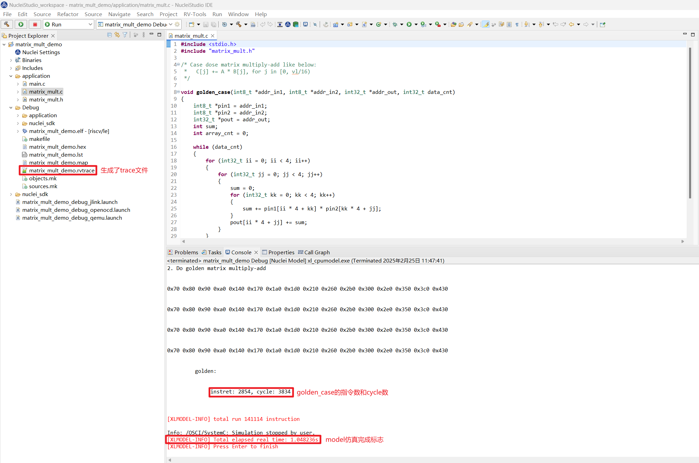
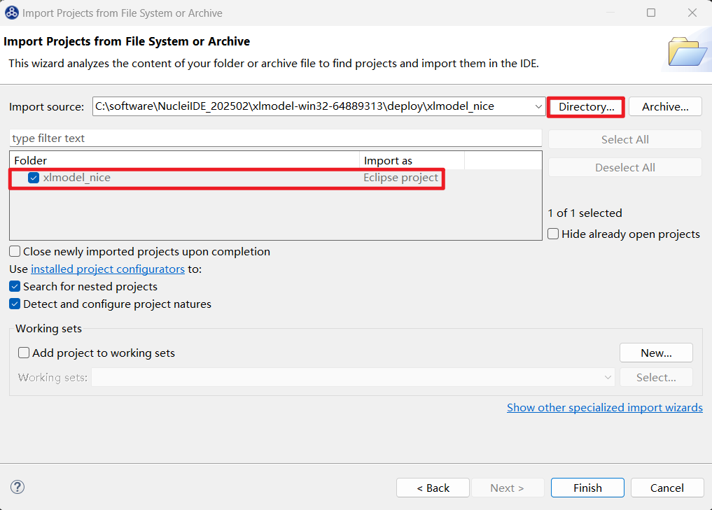
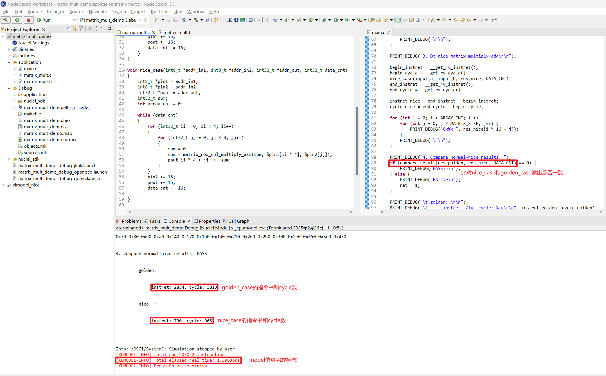

Nuclei Model结合Nice Wizard快速验证NICE/VNICE指令加速¶
Nuclei Model 已支持 Windows/Linux 版本，此文档测试都是基于 Nuclei Studio 的 Windows 版本 (>= 2025.02) 完成的。
背景描述¶
xlmodel_nice¶
Nuclei Model 会不断更新提供用户可自定义实现 NICE/VNICE 的 xlmodel_nice 软件包，用户通过在 xlmodel_nice/nice/src/nice.cc 实现指令的具体行为，编译出新的 Nuclei Model 供应用程序配置调用。
Nuclei NICE Wizard¶
Nuclei NICE Wizard 是 Nuclei Studio 上提供的 NICE/VNICE 指令生成控件，用户配置好自定义指令后，可以自动生成两个文件：
insn.h: 指令内嵌汇编头文件，用户需要将此文件的指令内嵌汇编添加到应用程序头文件中nice.cc: 指令实现文件，用户需要将此文件的指令 decode 框架添加到xlmodel_nice/nice/src/nice.cc中
test code¶
在 AI 与深度学习中常见的批量矩阵运算中，存在需要多次处理小矩阵块的场景，此测试将使用标量的多个 4x4 矩阵的乘法和累加操作的算法函数作为 golden_case，然后通过配置 NICE Wizard 生成 NICE/VNICE 加速指令，分别添加到测试应用程序和 xlmodel_nice 软件包工程中重新编译，最后通过运行 Nuclei Model 查看优化后的算法函数的指令数和 cycle 数，以查看 NICE/VNICE 加速效果。
解决方案¶
环境准备¶
Nuclei Studio IDE 集成的 NICE Wizard 相关功能，需要配合 Nuclei CPU Model - NICE Support (xlmodel_nice) 软件包使用。
Nuclei Studio：
xlmodel_nice：
Nuclei Model运行原始程序¶
step1：导入 Nuclei SDK 原始工程
下载 zip 包后，可以直接导入到 Nuclei Studio 中运行 (导入步骤：File->Import->Existing Projects into Workspace->Select archive file->选择zip压缩包->Finish即可)
step2：编译 Nuclei SDK 原始工程
编译原始工程，确保编译成功以及在 Debug 下可以找到生成的 elf 文件：
step3：运行 Nuclei SDK 原始工程
在使用 Nuclei Model 运行程序时，需要先确定工程 Nuclei Settings 中的 Core 配置和 Other extensions 配置，这些配置需要传递给 Model 使用。当前使用的 Core 是 n900fd，Other extensions 未配置。
Model 仿真程序需要配置 Nuclei Studio 中的 Nuclei Model 配置项，步骤如下：
- 打开 Nuclei Studio 主菜单栏的
Run选项的Run Configurations - 选择
Nuclei Model配置项，右键选择New Configuration，会自动生成项目名的 Model 配置页面，launch bar也会同步更新 - 在右侧
Main选项卡中点击Search Project...选择编译好的 elf 文件 - 在右侧
Model选项卡中选择Browse找到 Nuclei Model 可执行程序默认路径：NucleiStudio/toolchain/nucleimodel/bin/xl_cpumodel.exe -
在右侧
Model选项卡中的Config options中完成 model 运行配置：--cpu=n900fd --trace=1 --logdir=Debug,--cpu和--ext需要保持和Nuclei Settings的Core和Other extensions配置一致，--ext为空时不传递此参数，--trace=1表示开启 rvtrace，--logdir=Debug则表示最终生成的*.rvtrace文件存存放路径为当前工程下的 Debug 目录，然后点击Apply和Run，model 就开始运行程序了
在 Console 中会看到 Total elapsed time 说明 model 已经完成仿真了，程序会提取标量矩阵乘算法函数 golden_case 的执行指令数和 cycle 数如下：

NICE指令替换¶
step1：编译 xlmodel_nice 软件包
下载并解压 xlmodel_nice zip 包后，可以直接导入到 Nuclei Studio 中运行 (导入步骤：File->Import->Projects from Folder or Archive->Next->Directory->选择xlmodel_nice文件夹->Finish即可)

在编译 xlmodel_nice 前需先配置好 xlmodel 的编译环境 (xlmodel_nice 编译环境配置)，然后编译确保原始软件包可以成功编译生成 model 的可执行程序：

step2：NICE Wizard生成NICE指令替换
应用程序的热点函数可以先用 Nuclei Model Profiling 来定位，具体使用可以参考 通过Profiling展示Nuclei Model NICE/VNICE指令加速，这里不再赘述了。
此用例的热点函数已知是矩阵乘累加，A矩阵某行 * B矩阵某列计算如下：
for (int32_t kk = 0; kk < 4; kk++)
{
sum += pin1[ii * 4 + kk] * pin2[kk * 4 + jj];
}
此算法完全可以替换成一条 NICE 指令来完成，输入为 sum 值， pin1 地址， pin2 地址，输出为 sum。
接下来用 NICE Wizard 来生成设想的 NICE 指令，用户可以在 Nuclei Studio 的 xlmodel_nice 工程根目录创建一个 aicc.nice 的文件，此文件创建后就会弹出 NICE Wizard 的指令生成窗口，配置生成 NICE 指令步骤如下：
- 选择
Add添加一条NICE指令，指令格式如左上角NICE instruction format所示，首先填写Instruction name项为matrix_row_col_multiply_asm表示矩阵行列乘加操作 - 依次选择填写
opcode、funct3、funct7 -
params是指令内嵌汇编的返回值和入参配置，构想的NICE指令返回值为int32_t，入参个数为3个，分别是int32_t t、int8_t* a、int8_t* b，分别在params中设置好注意： 在 入参的
Edit Type设置界面中，是按照 a->b->t 的顺序配置的: -
在
Function full preview中预览指令内嵌汇编格式是否正确，确保没有问题后点击save，save完成后可以在左侧指令栏中看到生成好的自定义指令了 -
点击下方
Save and Generate File，在aicc.nice同路径下会生成insn.h和nice.cc
-
将生成好的
insn.h中的NICE指令内嵌汇编复制到应用程序的头文件中，将生成好的nice.cc直接替换xlmodel_nice/nice/src/nice.cc当然也可以将
insn.h直接生成到应用程序工程路径下引用，这样可以省去每次手动的复制文件内容。
step3：xlmodel_nice实现NICE指令
打开 xlmodel_nice/nice/src/nice.cc 文件，使用 spike 中定义的宏来实现 NICE 指令：MMU 宏表示 memory 访问，load memory 使用 MMU.load_xxx<n>，store memory 使用 MMU.store_xxx<n>，RD、RS1、RS2、RS3 宏表示其对应标量寄存器中的值, 写目标寄存器使用 WRITE_RD，这些宏的使用可以参考 nice/inc/decode_macros.h。
在指令实现完后，将自定义指令额外需要的 cycle 数 n 直接标定：STATE.mcycle->bump(n); 即可，这里标定此条 NICE 指令额外需要 1 cycle，由于指令默认需要 1 cycle，因此此条 NICE 指令需要消耗 2 cycle。
实现的 NICE 指令实现和 cycle 标定如下：
重新编译 xlmodel_nice 保证编译通过。
step4：Nuclei Model重新运行程序
首先需要编写一个带 NICE 指令内嵌汇编的算法函数 nice_case 方便和 golden_case 对比，添加函数输出结果比对，然后重新编译应用程序工程：

因为 model 已经使用 xlmodel_nice 重新编译出新的可执行程序了，需要重新配置 Nuclei Studio Nuclei Model 配置项中的 model 可执行程序路径为 xlmodel_nice/build/default/xl_cpumodel.exe，其余配置不变：

Apply 后重新 Run 应用程序, 可以发现 nice_case 和 golden_case 输出结果一致，nice_case 的指令数和 cycle 数均大幅下降了，构想的 NICE 指令实现正确，并优化了原标量算法。

VNICE指令替换¶
step1：NICE Wizard生成VNICE指令替换
当使用 NICE 指令运算时，每次仅得到的是输出矩阵的一个元素，效率还不够高，如果一次指令操作可以并行处理多个矩阵元素，效率应将进一步提高，很自然会想到使用 Vector 指令来多并行度处理矩阵数据。
构想将完整的 4 * 4 矩阵乘加运算浓缩为一条 Vector 指令，可以使用一条 VNICE 指令来实现此行为，入参为 3 个 4 * 4 的输入矩阵，返回值为 4 * 4 的输出矩阵。
双击 aicc.nice 再次使用 NICE Wizard 配置构想指令，生成指令的步骤和以上生成 NICE 指令相似，不同之处为配置 Instruction name 项为 matrix_multiply_4x4_asm 表示完成的是 4*4 的两矩阵的乘法，配置 funct3 为 1 避免与上条 NICE 指令编码相同，为了匹配和 golden_case 标量对应的 vector 数据类型的输入输出，设置返回值为 vin32m8_t，入参个数为 3，分别是 vin32m8_t、vint8m1_t、vint8m2_t，点击 save 后的配置界面如下：

点击下方 Save and Generate File，覆盖之前生成的 insn.h 和 nice.cc，此时在同路径下还会出现 insn.h.bak 和 nice.cc.bak, 这两个文件是上一次保存的 insn.h 和 nice.cc 备份文件不会被用到，再次将生成好的 insn.h 中的 NICE 指令内嵌汇编复制到应用程序的头文件中，将生成好的 nice.cc 中的新指令 decode 框架复制到 xlmodel_nice/nice/src/nice.cc：
step2：xlmodel_nice实现VNICE指令
在 xlmodel_nice/nice/src/nice.cc 中实现 VNICE 指令，V_MATRIX_ST 实现将指令输入的 vector 寄存器 store 到自定义 buffer 中，V_MATRIX_LD 实现将指令输出的结果 load 到 RD 寄存器，V_MATRIX_CALC 实现两矩阵乘加运算，VNICE 指令实现可以参考 spike 中的 vector 指令实现： xlmodel_nice/xl_spike/include/riscv/v_ext_macros.h。
标定此条 VNICE 指令需要 2 cycle，即实际消耗 3 cycle，实现的 VNICE 指令实现和 cycle 标定如下：
再重新编译 xlmodel_nice 保证编译通过。
step3：Nuclei Model重新运行程序
因为 VNICE 指令的输入输出均为 vector 寄存器，需要配置应用程序的 Nuclei Settings，使能对应 ARCH 的 vector 扩展，这里针对 rv32imafdc 添加 _zve32f 扩展：
对应的 Nuclei Model 配置项也需要添加 --ext=_zve32f使能 model 的 vector 功能，然后 Apply：

需要编写一个带 VNICE 指令内嵌汇编的算法函数 vnice_case，VNICE 内嵌汇编需要的输入输出需要写相应的 vector intrinsic API 来构造，然后添加和 golden_case 的结果比对，重新编译应用程序工程。
注意： 在应用程序头文件中需要添加 #include <riscv_vector.h> 以使能 vector intrinsic API
重新 Run 应用程序, 可以发现 vnice_case 和 golden_case 输出结果一致，其指令数和 cycle 数相对 nice_case 进一步大幅下降了，构想的 VNICE 指令实现正确，并利用了 vector 的高并行度加速了矩阵乘加算法。

总结¶
下表是实现了 NICE/VNICE 指令优化算法后的 instret/cycle 数据统计，相较于 golden_case, nice_case 优化后的性能提高了约 4 倍，vnice_case 优化后的性能提高了超过 30 倍。
| instret/cycle | golden_case | nice_case | vnice_case | golden / nice | golden / vnice | nice / vnice |
|---|---|---|---|---|---|---|
| instret | 2854 | 730 | 88 | 3.91 | 32.43 | 8.30 |
| cycle | 3859 | 964 | 121 | 4.00 | 31.89 | 7.97 |
用户通过研究现有算法的优化策略，就可以将构想快速通过 NICE Wizard 生成相关 NICE/VNICE 指令，再通过 Nuclei Studio 导入 xlmodel_nice 软件包实现指令，编写应用程序指令优化 case，就可以很快的利用 Nuclei Model 验证算法优化效果，整个测试过程只需使用 Nuclei Studio 就可以完成。